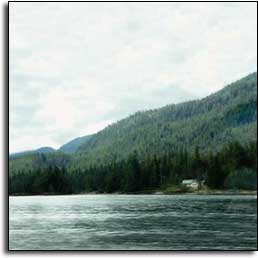
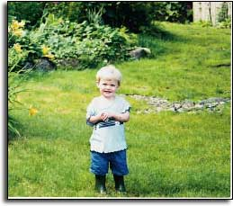
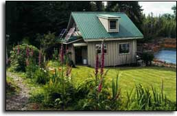
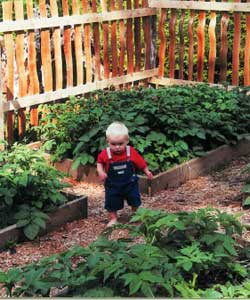

Wild About Alaska
At their remote home on Moser Bay, the author and her family harvest halibut and huckleberries and shoo bears out of the back yard.
By Mary Hillberry
August/September 2004
At our remote home on Moser Bay, we harvest halibut and huckleberries, and shoo bears out of our back yard.
Story and Photos by Mary Hillberry
My husband, Mark, and I live with our two children on Moser Bay, about an hour from Ketchikan, Alaska. Our home is so close to the water that we can go out into our front yard and catch fish for dinner, and far enough from town that we see more seals, ravens and bald eagles than people. This is the good life.
When we travel to Ketchikan, half of our journey is made across the water in our 17-foot fiberglass boat. We keep our car at the marina and then drive the 16 miles into town. In the summer, we go to town at least once a week, but in the winter, we make the trip less often; when the weather is cold and calm enough, the bay’s salt water can freeze on the surface, locking our boat in place.
At home, we don’t have access to public utilities, and cell phones are useless because we are out of the broadcast towers’ range. Out here, we are off the grid and truly on our own. The closest resident is about a mile away, across the bay. We may go a week or more without seeing another person, and we can go to the nearby islands on the bay and not see another soul, ever.
Some of the “luxurious” features in our home would be taken for granted by most people: We have a flush toilet, hot water for the shower and lights that turn on with the flick of a switch. Maintaining an off-the-grid home of this standard in this location can be a full-time occupation. Unfortunately, that occupation doesn’t provide an income, so every other week Mark heads off to his job on the state ferries, which offers a regular paycheck and benefits.
Building the Dream
Mark grew up in Alaska, and bought this property just after graduating from high school. Over a period of several years, he built a 20-by-20-foot, two-story cabin. Meanwhile, I was living in my home state of Arizona, enduring hot summers and endless sunshine.
In 1995, I moved to southeast Alaska after deciding it was the rainiest place in the United States, and the least like Phoenix. Mark and I met at the University of Alaska in Juneau, married and moved to Ketchikan, where we opened a bed and breakfast.
After two years, we decided to expand the business by buying a bigger property. We sold the B&B and planned to stay at the cabin while we searched for our new house. We didn’t really consider living here permanently; there were just too many obstacles. We didn’t have an indoor bathroom or electricity, and we were expecting our first baby. We thought the cabin was too primitive to live in year round, but the longer we stayed, the more desirable living here became. The view of the bay charmed us, and we loved the peace and solitude. Slowly, we realized we could make this a comfortable, permanent home, so we set aside the B&B idea and decided to make it work. Five years later, we have a daughter and son - Ella is 3 and Owen is 4 - and we have transformed the small cabin into a beautiful three-bedroom home.
My husband is a talented finish carpenter; he learned the basics of this skill from his father, from experience and by reading books. However, adding on to the cabin had one unusual challenge: All of the new materials had to be brought in by water. We were able to bring most of the construction materials in ourselves, but for the framing materials and the windows, we finally went into town and hired a barge.
Mark also designed our water and power systems. We don’t have an unlimited power source; we just live on less. From April to October, our four solar panels and the long hours of sunshine provide our batteries with all the power we need for 12-volt lighting and a shower pump. During the weeks before and after the summer solstice, the sun may not set until after 9 p.m., and we never see complete darkness. During the winter, we run our 2,000-watt generator about five hours a day to keep our electricity going.
Our home has an abundance of windows, which helps reduce our need for electric lights. For heat, we have a 1970s- model airtight Earth Stove, which keeps our entire home a comfortable 70 degrees. Our refrigerator, range and water heater all burn propane, consuming a total of about 1 gallon per day, which helps keep our energy-related costs low. We have learned, however, to not depend on any one piece of equipment because we are constantly reminded that if it runs, it can quit. We have backup systems for everything, because we have found that as fast as Mark can fix one system, another will break.
A Soggy Paradise
We live in a temperate rain forest where about 160 inches of rain, snow, sleet and slush fall every year. In warm weather, the constant rain waters our gardens, soaks our children and fills our water tanks.
We collect rainwater from the steel roofs of two of our outbuildings, and store it in two tanks that hold a total of 4,300 gallons. When we added the second one, we thought it less than ideal to have two separate tanks, but one winter morning about two years ago, we woke to discover a beautiful glacier running from the larger tank straight to our back door. The valve on the tank had yielded to the subfreezing temperatures, and overnight the water had slowly leaked out. Thankfully, we had the other tank.
Every once in a while we wake up to a sunny day and realize that everything works, and nothing is leaking. On those days we get busy with our favorite hobby, gardening. We are planting addicts; we love to grow flowers and food. Every year we try to coax some new plant into living in this soggy, cool paradise, although this year we both agreed that we couldn’t possibly add even one more flower bed.
Salad greens are one of our favorite things to grow, and we have a large garden for lettuce, spinach, kale, carrots and parsnips. Another vegetable garden is devoted to raspberries and starts. We put in a long, stone raised bed directly behind the south wall of the house and filled it with herbs, beans and sunflowers.
We also attempted to grow tomatoes, but we have a short growing season here - the garden doesn’t start until May and it will be done by September. Apparently, this is the reason so many Alaskan recipes call for green tomatoes. We also do some wild harvesting; we make our own jam with wild red and blue huckleberries, and we collect spruce tips, which we boil to make a syrup. Unfortunately, all the edible plants surrounding our home cause us to have a less-than-harmonious relationship with wild neighbors that try to eat whatever we plant. I love to see a doe or fawn munching the grass in my yard, but if a deer so much as tastes a flower, I politely ask it to leave. I also have started planting more inedible flowers and shrubs.
Other frequent visitors include the “scratcher” birds - the robins and junkos that hunt for food in our garden and seem to eat 50 times their weight in seed. Minks have killed our chickens and guinea hens, despite our efforts to protect the birds. Blue jays pull up seedlings and pick our flowers, and ravens will steal anything small and brightly colored. Sometimes I worry a raven may try to make off with one of the children.
We have seen wolves from a distance, but we have yet to get into a disagreement with one, and we prefer to keep it that way. However, we did abandon our compost pile for several months last spring after we caught a black bear picking it over. Because the wild things greatly outnumber us, we compromise daily. Slugs are the only exception: We prefer to see them dead.
We fish a lot in the summer for salmon and halibut, and we also set shrimp and crab pots, with variable success. In the summer, we mainly eat seafood, although after a while we do go to the grocery store to buy chicken, just for the change.
The children get excited whenever we catch seafood, and they love to eat it. We also take out the skiff to visit the many islands of the bay, beachcombing and exploring the different tide lines and forests.
Life by the Seasons
Despite the difficulties of building a home and raising a family in a remote location, we find there’s no place we’d rather be. Our days are not ruled by the clock or calendar, but by the seasons, weather and tides. When long summer days grow shorter and wetter as fall approaches, we put our gardens to bed with seaweed mulch, pick berries for pies and jam, harvest crab and shrimp, cut firewood and prepare for winter, which provides hide-indoor days. In winter, we have too much time to perfect our culinary skills and find a few clear, cold days perfect for working on the woodpile. In the spring, we eagerly watch the garden return to life, and the forest and air fill with the sounds of wildlife.
Where we live, land values are still low, but it’s not likely to stay that way. Further north, land values are skyrocketing already, and we know that it’s only a matter of time before our area of the state becomes popular as well. But population growth here may be countered by how little land is for sale. The borough still owns most of the land along the water, and even local people who want to buy property have to participate in a lottery system because the demand is high. With the births of our son and daughter, we found the challenges of remote living changed. As our children get older, we’re beginning to spend more time in town so they can visit their friends, and I also bring people out to our house. Many enjoy visiting if I can pick them up in the boat. In the future, we can enroll the children in a private school for half a term, and home school during the winter months, when it’s harder to get into town.
Once in a while, when yet another storm leaves us housebound, and it’s dark at 3:30 p.m., we look at each other and wonder what we’re doing here. Then we remember that we are debt-free, happy and living exactly the way we want. What we have here is extraordinary, and we are teaching our son and daughter that even a crazy dream is possible.
|
 Photos by Mary Hillberry Ella plays in the back yard. |
 Photos by Mary Hillberry The Hillberrys? solar-powered cabin, before additions were made. Top left: A view of the completed house from the bay. |
 Photos by Mary Hillberry Owen visits the vegetable patch. |
|
 Photos by Mary Hillberry Mark and Mary, in their emerging home. |
 Photos by Mary Hillberry |
|